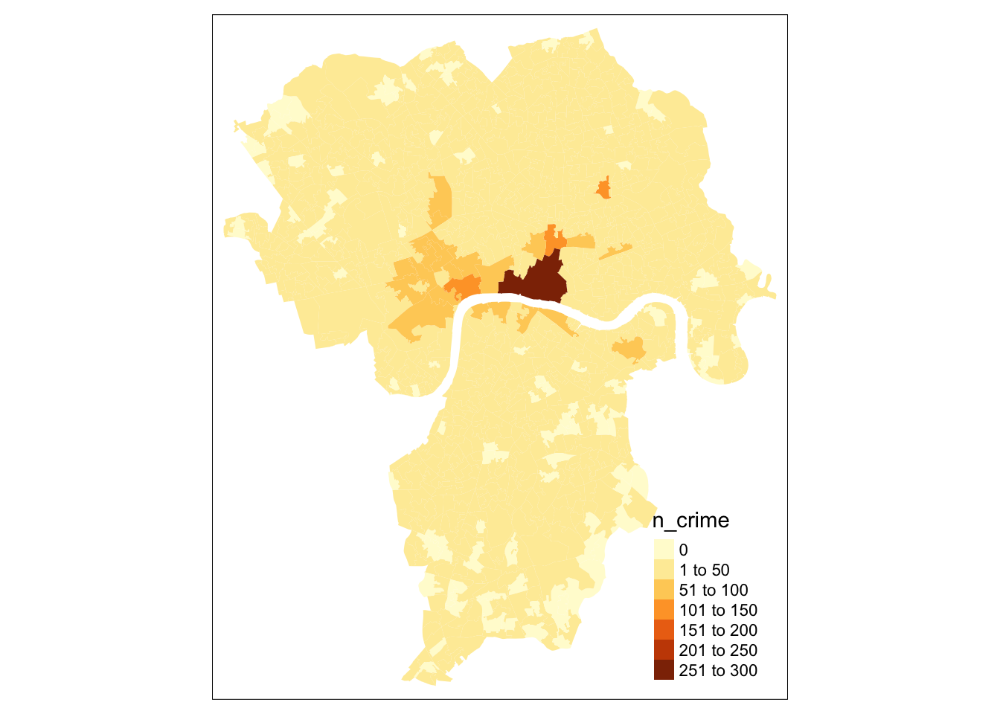
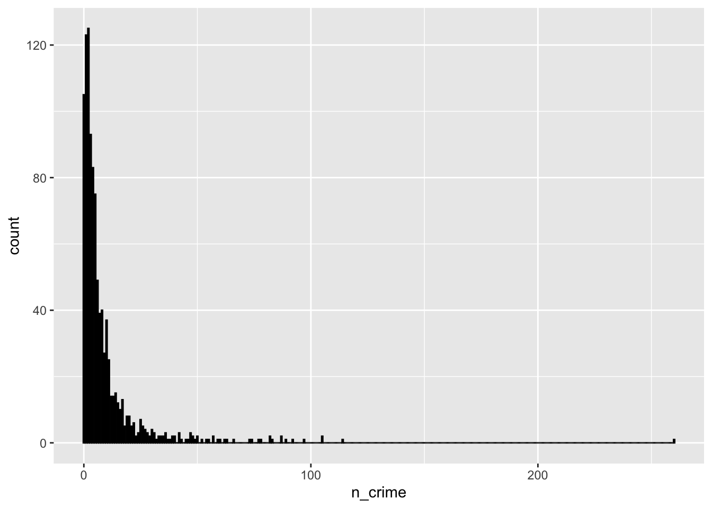
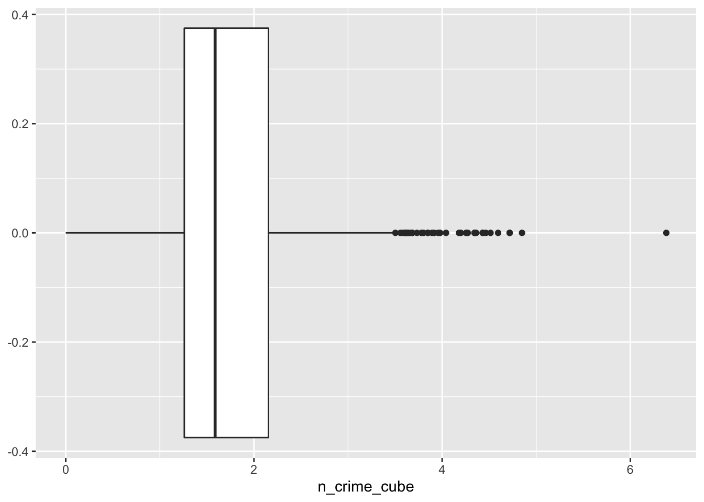
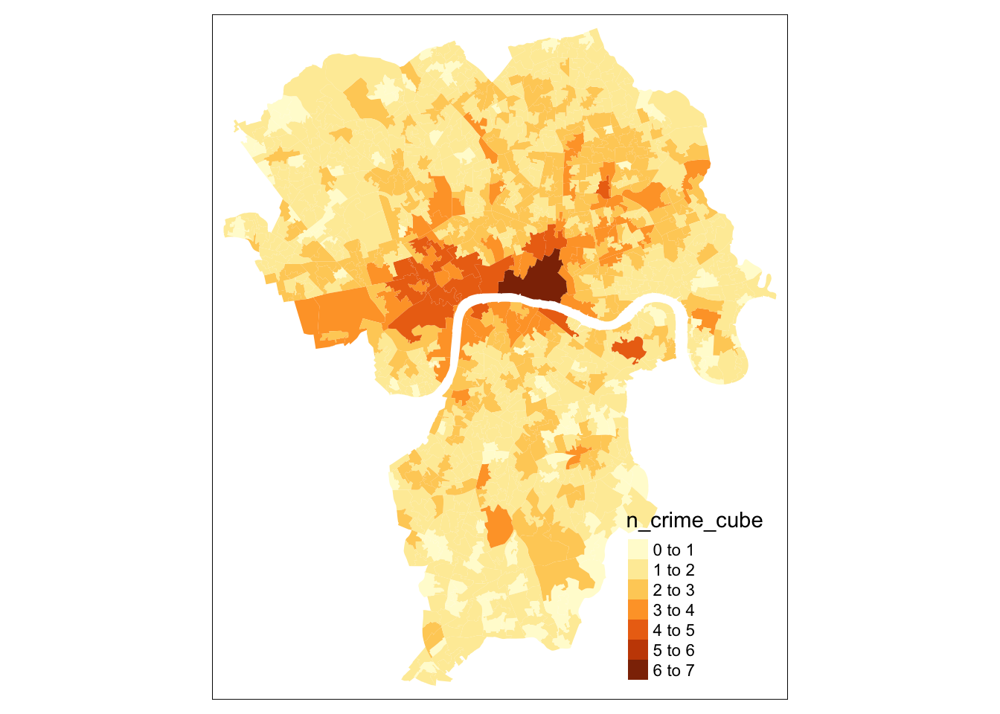
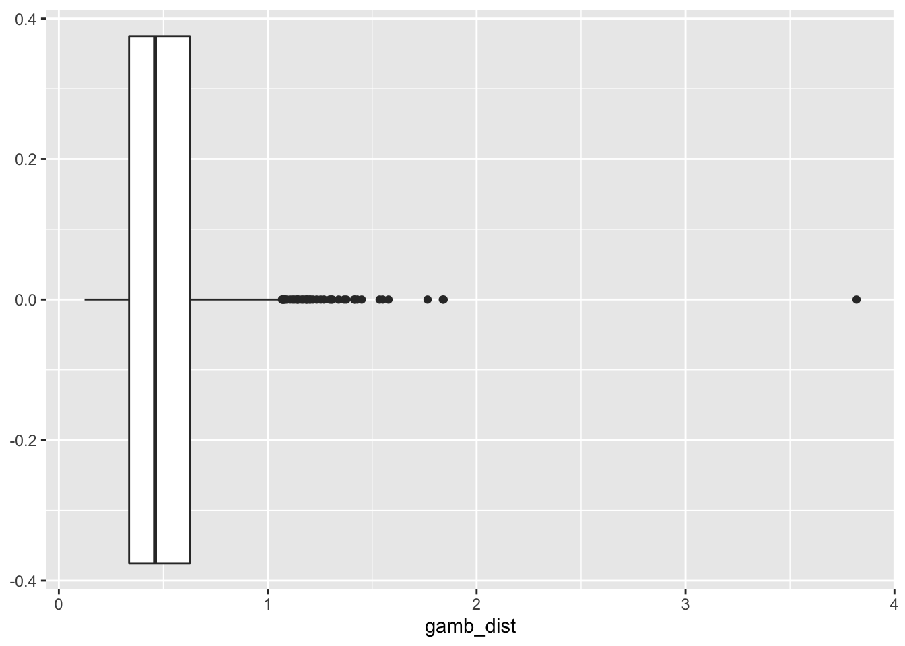
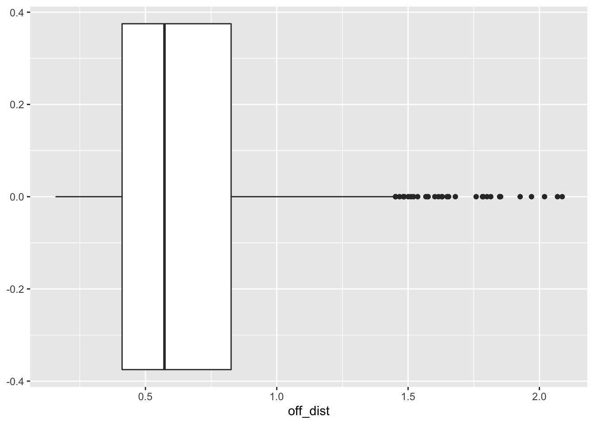
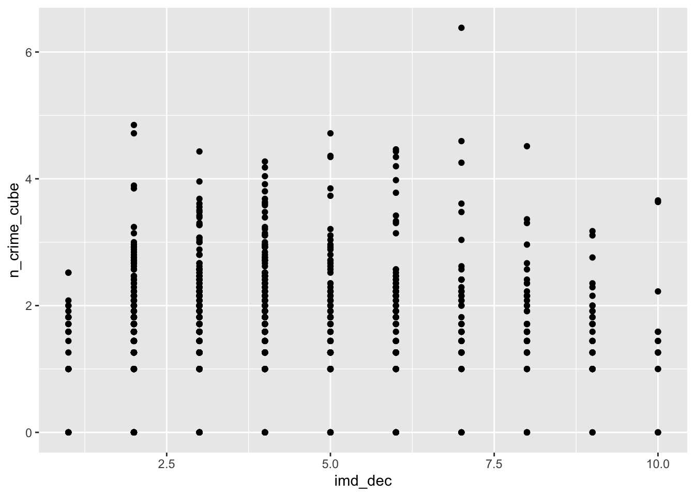
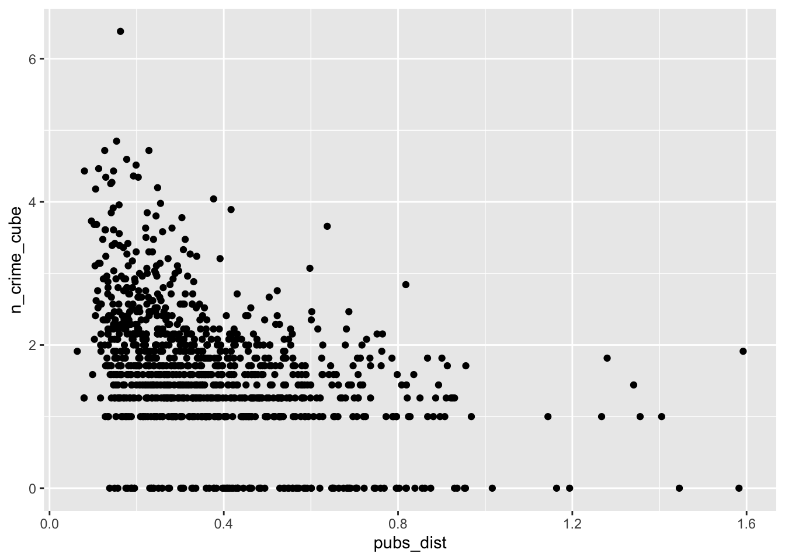
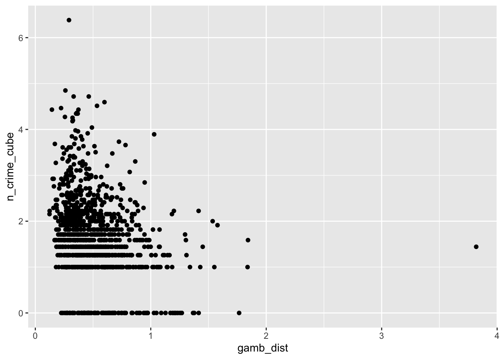
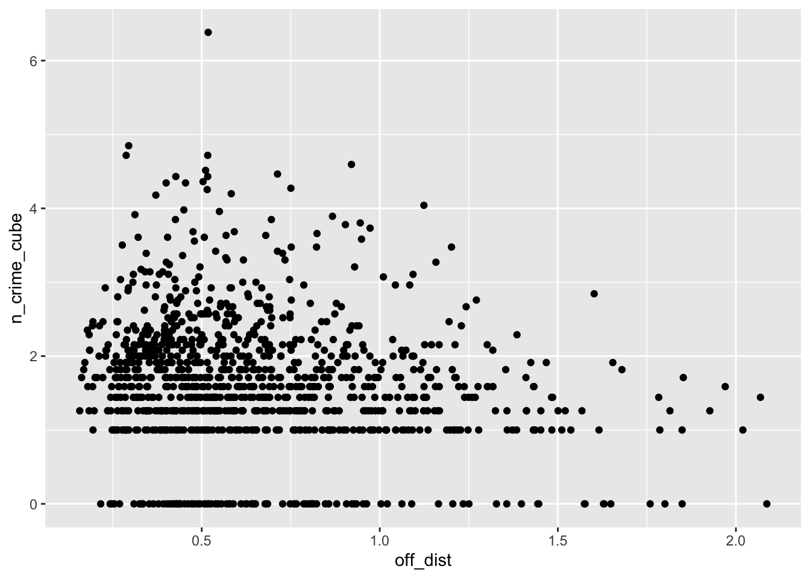

5 Exploratory spatial data analysis
5.1 Introduction
This week, we focus on the second of the two key properties of spatial data: spatial heterogeneity. With the underlying process (or processes) that govern a spatial variable likely to vary across space, a single global relationship for an entire region of study may not adequately model the process that governs outcomes in any given location of the study region. As a result, multiple methods have been developed to incorporate ‘space’ into traditional regression models, including spatial lag models, spatial error models, and Geographical Weighted Regression.
This week provides the building blocks to conducting a statistical and spatial investigation into the relationships between spatial variables, looking at the concept of Exploratory Spatial Data Analysis (ESDA). We then look at the two of the three types of spatial regression models in turn to understand their methodology and potential advantages and limitations in accounting for space when modelling relationships. However, before we move on to ESDA, we will look into some aspects of data preparation, data cleaning, and creating a tidy dataset.
In the first part of this week’s session we will start by creating a tidy dataset using some data from the UK 2011 Census of Population. In the second part of this week’s session we will explore potential factors that may contribute to bicycle theft in London. We conduct an ESDA of these variables, followed by statistical and spatial regression analysis to determine whether our variables contribute to bicycle theft in our area of study.
This week is structured by three short lecture videos, two assignments that you need to do in preparation for Friday’s seminar, and the practical material. As always, this week’s reading list is available on the UCL library reading list page for the course.
Please be aware that you will need to [submit the result[#submit_w05] of the second assignment before Friday morning 09h00 UK time (GMT+0).
5.1.1 Video: Overview
[Lecture slides] [Watch on MS stream]5.2 Tidy data
Over the past weeks a lot of information has come your way, diving deep into the world of Spatial Data Science. However, whilst you are slowly becoming proficient in using R and Python to solve complex (spatial) problems, it is now a good moment to start thinking about data themselves and how they are organised. This is crucial for when you are moving on to working on your own projects where you have to source data yourselves: the vast majority of the data you will find in the public domain (or private domain for that matter) will be dirty data. With dirty data we mean data that needs some form of pre-processing, cleaning, and linkage before you can use it for your analysis. Exploratory Spatial Data Analysis very much starts with your data preparation .
In the following, you will learn a consistent way to structure your data in R: tidy data. Tidy data, as formalised by R Wizard Hadley Wickham in his contribution to the Journal of Statistical Software is not only very much at the core of the tidyverse R package, but also of general importance when organising your data. In the words, of the Wizard:
Once you have tidy data and the tidy tools provided by packages in the tidyverse, you will spend much less time munging data from one representation to another, allowing you to spend more time on the analytic questions at hand.
5.2.2 What do tidy data look like?
You can represent the same underlying data in multiple ways. The example below, taken from the the tidyverse package and described in the R for Data Science book, shows that the same data can organised in four different ways.
# load the tidyverse
library(tidyverse)Table 1:
table1## # A tibble: 6 x 4
## country year cases population
## <chr> <int> <int> <int>
## 1 Afghanistan 1999 745 19987071
## 2 Afghanistan 2000 2666 20595360
## 3 Brazil 1999 37737 172006362
## 4 Brazil 2000 80488 174504898
## 5 China 1999 212258 1272915272
## 6 China 2000 213766 1280428583Table 2:
table2## # A tibble: 12 x 4
## country year type count
## <chr> <int> <chr> <int>
## 1 Afghanistan 1999 cases 745
## 2 Afghanistan 1999 population 19987071
## 3 Afghanistan 2000 cases 2666
## 4 Afghanistan 2000 population 20595360
## 5 Brazil 1999 cases 37737
## 6 Brazil 1999 population 172006362
## 7 Brazil 2000 cases 80488
## 8 Brazil 2000 population 174504898
## 9 China 1999 cases 212258
## 10 China 1999 population 1272915272
## 11 China 2000 cases 213766
## 12 China 2000 population 1280428583Table 3:
table3## # A tibble: 6 x 3
## country year rate
## * <chr> <int> <chr>
## 1 Afghanistan 1999 745/19987071
## 2 Afghanistan 2000 2666/20595360
## 3 Brazil 1999 37737/172006362
## 4 Brazil 2000 80488/174504898
## 5 China 1999 212258/1272915272
## 6 China 2000 213766/1280428583Table 4a:
table4a## # A tibble: 3 x 3
## country `1999` `2000`
## * <chr> <int> <int>
## 1 Afghanistan 745 2666
## 2 Brazil 37737 80488
## 3 China 212258 213766Table 4b:
table4b## # A tibble: 3 x 3
## country `1999` `2000`
## * <chr> <int> <int>
## 1 Afghanistan 19987071 20595360
## 2 Brazil 172006362 174504898
## 3 China 1272915272 1280428583None of these representations are wrong per se, however, not are equally easy to use. Only Table 1 can be considered as tidy data because it is the only table that adheres to the three rules that make a dataset tidy:
- Each variable must have its own column.
- Each observation must have its own row.
- Each value must have its own cell.
.](images/week05/05_a_tidy_data.png)
Figure 5.1: A visual representation of tidy data by Hadley Wickham.
Fortunately, there are some functions in the tidyr and dplyr packages, both part of the tidyverse that will help us cleaning and preparing our datasets to create a tidy dataset. The most important and useful functions are:
| Package | Function | Use to |
|---|---|---|
| dplyr | select | select columns |
| dplyr | filter | select rows |
| dplyr | mutate | transform or recode variables |
| dplyr | summarise | summarise data |
| dplyr | group by | group data into subgropus for further processing |
| tidyr | pivot_longer | convert data from wide format to long format |
| tidyr | pivot_wider | convert long format dataset to wide format |
Remember that when you encounter a function in a piece of R code that you have not seen before and you are wondering what it does that you can get access the documentation through
?name_of_function, e.g.?pivot_longer. For almost any R package, the documentation contains a list of arguments that the function takes, in which format the functions expects these arguments, as well as a set of usage examples.
5.2.3 Example: Creating tidy data
Now we know what consitute tidy data, we can put this into practice with an example using some data from the Office for National Statistics. Let’s say we are asked by our bosses to analyse some data on the ethnic background of the UK population, for instance, because we want to get some insights into the relationship between COVID-19 and ethnic background. Our assignment is to calculate the relative proportions of each ethnic group within the administrative geography of the Middle layer Super Output Area (MSOA). In order to do this, we have been given a file that contains data on ethnicity by age group at the MSOA-level of every person in the 2011 UK Census who is 16 year or older. Download the file to your own computer and set up your data directory in the same fashion as you did last week. You can also decide on setting up your own folder structure, no problem, just make sure that you update the file paths in the practical to match the file paths on your own computer.
Make sure that after downloading you first unzip the data, for instance, using 7-Zip on Windows or using The Unarchiver on Mac OS.
File download
| File | Type | Link |
|---|---|---|
| Etnicity by age group 2011 Census of Population | csv |
Download |
We start by making sure our tidyverse is loaded into R and using the read_csv() function to read our csv file.
# load the tidyverse
library(tidyverse)
# read data into dataframe
df <- read_csv('raw/population/msoa_eth2011_ew_16plus.csv')
# inspect the dataframe: number of columns
ncol(df)## [1] 385# inspect the dataframe: number of rows
nrow(df)## [1] 7201# inspect the dataframe: sneak peak
print(df, n_extra=2)## # A tibble: 7,201 x 385
## msoa11cd `Sex: All perso… `Sex: All perso… `Sex: All perso… `Sex: All perso…
## <chr> <dbl> <dbl> <dbl> <dbl>
## 1 E020025… 215 206 204 0
## 2 E020025… 175 170 168 1
## 3 E020025… 140 128 128 0
## 4 E020025… 160 155 154 0
## 5 E020025… 132 130 130 0
## 6 E020025… 270 263 261 0
## 7 E020025… 124 119 117 0
## 8 E020025… 150 125 117 0
## 9 E020025… 178 166 159 0
## 10 E020025… 162 159 157 0
## # … with 7,191 more rows, and 380 more variables: `Sex: All persons; Age: Age
## # 16 to 17; Ethnic Group: White: Gypsy or Irish Traveller; measures:
## # Value` <dbl>, `Sex: All persons; Age: Age 16 to 17; Ethnic Group: White:
## # Other White; measures: Value` <dbl>, …Because the data are split out over multiple columns, it is clear that the data are not directly suitable to establish the proportion of each ethnic group within the population of each MSOA. Let’s inspect the names of the columns to get a better idea of the structure of our data set.
# inspect the dataframe: column names
names(df)## [1] "msoa11cd"
## [2] "Sex: All persons; Age: Age 16 to 17; Ethnic Group: All categories: Ethnic group; measures: Value"
## [3] "Sex: All persons; Age: Age 16 to 17; Ethnic Group: White: Total; measures: Value"
## [4] "Sex: All persons; Age: Age 16 to 17; Ethnic Group: White: English/Welsh/Scottish/Northern Irish/British; measures: Value"
## [5] "Sex: All persons; Age: Age 16 to 17; Ethnic Group: White: Irish; measures: Value"
## [6] "Sex: All persons; Age: Age 16 to 17; Ethnic Group: White: Gypsy or Irish Traveller; measures: Value"
## [7] "Sex: All persons; Age: Age 16 to 17; Ethnic Group: White: Other White; measures: Value"
## [8] "Sex: All persons; Age: Age 16 to 17; Ethnic Group: Mixed/multiple ethnic group: Total; measures: Value"
## [9] "Sex: All persons; Age: Age 16 to 17; Ethnic Group: Mixed/multiple ethnic group: White and Black Caribbean; measures: Value"
## [10] "Sex: All persons; Age: Age 16 to 17; Ethnic Group: Mixed/multiple ethnic group: White and Black African; measures: Value"
## [11] "Sex: All persons; Age: Age 16 to 17; Ethnic Group: Mixed/multiple ethnic group: White and Asian; measures: Value"
## [12] "Sex: All persons; Age: Age 16 to 17; Ethnic Group: Mixed/multiple ethnic group: Other Mixed; measures: Value"
## [13] "Sex: All persons; Age: Age 16 to 17; Ethnic Group: Asian/Asian British: Total; measures: Value"
## [14] "Sex: All persons; Age: Age 16 to 17; Ethnic Group: Asian/Asian British: Indian; measures: Value"
## [15] "Sex: All persons; Age: Age 16 to 17; Ethnic Group: Asian/Asian British: Pakistani; measures: Value"
## [16] "Sex: All persons; Age: Age 16 to 17; Ethnic Group: Asian/Asian British: Bangladeshi; measures: Value"
## [17] "Sex: All persons; Age: Age 16 to 17; Ethnic Group: Asian/Asian British: Chinese; measures: Value"
## [18] "Sex: All persons; Age: Age 16 to 17; Ethnic Group: Asian/Asian British: Other Asian; measures: Value"
## [19] "Sex: All persons; Age: Age 16 to 17; Ethnic Group: Black/African/Caribbean/Black British: Total; measures: Value"
## [20] "Sex: All persons; Age: Age 16 to 17; Ethnic Group: Black/African/Caribbean/Black British: African; measures: Value"
## [21] "Sex: All persons; Age: Age 16 to 17; Ethnic Group: Black/African/Caribbean/Black British: Caribbean; measures: Value"
## [22] "Sex: All persons; Age: Age 16 to 17; Ethnic Group: Black/African/Caribbean/Black British: Other Black; measures: Value"
## [23] "Sex: All persons; Age: Age 16 to 17; Ethnic Group: Other ethnic group: Total; measures: Value"
## [24] "Sex: All persons; Age: Age 16 to 17; Ethnic Group: Other ethnic group: Arab; measures: Value"
## [25] "Sex: All persons; Age: Age 16 to 17; Ethnic Group: Other ethnic group: Any other ethnic group; measures: Value"
## [26] "Sex: All persons; Age: Age 18 to 19; Ethnic Group: All categories: Ethnic group; measures: Value"
## [27] "Sex: All persons; Age: Age 18 to 19; Ethnic Group: White: Total; measures: Value"
## [28] "Sex: All persons; Age: Age 18 to 19; Ethnic Group: White: English/Welsh/Scottish/Northern Irish/British; measures: Value"
## [29] "Sex: All persons; Age: Age 18 to 19; Ethnic Group: White: Irish; measures: Value"
## [30] "Sex: All persons; Age: Age 18 to 19; Ethnic Group: White: Gypsy or Irish Traveller; measures: Value"
## [ reached getOption("max.print") -- omitted 355 entries ]The column names are all awfully long and it looks like the data have been split out into age groups. Further to this, the data contain within group total counts: all categories, white total, mixed/multiple ethnic group total, and so on.
You can also try using
View(df)or use any other form of spreadsheet software (e.g. Microsoft Excel) to browse through the dataset to get a better idea of what is happening and get a better idea of the structure of the data. You first will need to understand the structure of your dataset before you can start reorganising your dataset.
Although the data is messy and we will need to reorganise our data set, it does look there is some form of structure present that we can exploit: the various columns with population counts for each ethnic group are repeated for each of the different age groups. This means that we can go through the data frame in steps of equal size to select the data we want: starting from column 2 (column 1 only contains the reference to the adminsitrative geography) we want to select all 24 columns of data for that particular age group. We can create a for loop that does exactly that:
# loop through the columns of our data set
for (column in seq(2,ncol(df),24)) {
# index number of start column of age group
start <- column
# index number of end column of age group
stop <- column + 23
# print results
print(c(start,stop))
}## [1] 2 25
## [1] 26 49
## [1] 50 73
## [1] 74 97
## [1] 98 121
## [1] 122 145
## [1] 146 169
## [1] 170 193
## [1] 194 217
## [1] 218 241
## [1] 242 265
## [1] 266 289
## [1] 290 313
## [1] 314 337
## [1] 338 361
## [1] 362 385For each age group in our data, the printed values should (!) correspond with the index number of the start column of the age group and the index number of the end column of the age group, respectively. Let’s do a sanity check.
# sanity check: age group 16-17 (start column)
df[,2]## # A tibble: 7,201 x 1
## `Sex: All persons; Age: Age 16 to 17; Ethnic Group: All categories: Ethnic g…
## <dbl>
## 1 215
## 2 175
## 3 140
## 4 160
## 5 132
## 6 270
## 7 124
## 8 150
## 9 178
## 10 162
## # … with 7,191 more rows# sanity check: age group 16-17 (end column)
df[,25]## # A tibble: 7,201 x 1
## `Sex: All persons; Age: Age 16 to 17; Ethnic Group: Other ethnic group: Any …
## <dbl>
## 1 0
## 2 0
## 3 0
## 4 0
## 5 0
## 6 0
## 7 0
## 8 0
## 9 0
## 10 0
## # … with 7,191 more rows# sanity check: age group 18-19 (start column)
df[,26]## # A tibble: 7,201 x 1
## `Sex: All persons; Age: Age 18 to 19; Ethnic Group: All categories: Ethnic g…
## <dbl>
## 1 157
## 2 129
## 3 102
## 4 162
## 5 121
## 6 217
## 7 126
## 8 231
## 9 175
## 10 95
## # … with 7,191 more rows# sanity check: age group 18-19 (end column)
df[,49]## # A tibble: 7,201 x 1
## `Sex: All persons; Age: Age 18 to 19; Ethnic Group: Other ethnic group: Any …
## <dbl>
## 1 1
## 2 0
## 3 0
## 4 0
## 5 0
## 6 0
## 7 0
## 8 1
## 9 0
## 10 0
## # … with 7,191 more rowsAll seems to be correct and we have successfully identified our columns. This is great, however, we still cannot work with our data as everything is spread out over different columns. Let’s fix this by manipulating the shape of our data by turning columns into rows.
# create function
columns_to_rows <- function(df, start, stop) {
# columns we are interested in
col_sub <- c(1,start:stop)
# subset the dataframe
df_sub <- select(df,col_sub)
# pivot the columns in the dataframe, exclude the MSOA code column
df_piv <- pivot_longer(df_sub,-msoa11cd)
# rename columns
names(df_piv) <- c('msoa11cd','age_group','count')
return(df_piv)
}
# test
columns_to_rows(df,2,25)## # A tibble: 172,824 x 3
## msoa11cd age_group count
## <chr> <chr> <dbl>
## 1 E02002559 Sex: All persons; Age: Age 16 to 17; Ethnic Group: All categ… 215
## 2 E02002559 Sex: All persons; Age: Age 16 to 17; Ethnic Group: White: To… 206
## 3 E02002559 Sex: All persons; Age: Age 16 to 17; Ethnic Group: White: En… 204
## 4 E02002559 Sex: All persons; Age: Age 16 to 17; Ethnic Group: White: Ir… 0
## 5 E02002559 Sex: All persons; Age: Age 16 to 17; Ethnic Group: White: Gy… 2
## 6 E02002559 Sex: All persons; Age: Age 16 to 17; Ethnic Group: White: Ot… 0
## 7 E02002559 Sex: All persons; Age: Age 16 to 17; Ethnic Group: Mixed/mul… 4
## 8 E02002559 Sex: All persons; Age: Age 16 to 17; Ethnic Group: Mixed/mul… 1
## 9 E02002559 Sex: All persons; Age: Age 16 to 17; Ethnic Group: Mixed/mul… 2
## 10 E02002559 Sex: All persons; Age: Age 16 to 17; Ethnic Group: Mixed/mul… 1
## # … with 172,814 more rowsThis looks much better. Now let’s combine our loop with our newly created function to apply this to all of our data.
# create an empty list to store our result from the loop
df_lst <- list()
# loop through the columns of our data set
for (column in seq(2,ncol(df),24)) {
# index number of start column of age group
start <- column
# index number of end column of age group
stop <- column + 23
# call our function and assign it to the list
df_lst[[length(df_lst)+1]] <- columns_to_rows(df,start=start,stop=stop)
}
# paste all elements from the list underneath one another
# do.call executes the function 'rbind' for all elements in our list
df_reformatted <- as_tibble(do.call(rbind,df_lst))
# and the result
df_reformatted## # A tibble: 2,765,184 x 3
## msoa11cd age_group count
## <chr> <chr> <dbl>
## 1 E02002559 Sex: All persons; Age: Age 16 to 17; Ethnic Group: All categ… 215
## 2 E02002559 Sex: All persons; Age: Age 16 to 17; Ethnic Group: White: To… 206
## 3 E02002559 Sex: All persons; Age: Age 16 to 17; Ethnic Group: White: En… 204
## 4 E02002559 Sex: All persons; Age: Age 16 to 17; Ethnic Group: White: Ir… 0
## 5 E02002559 Sex: All persons; Age: Age 16 to 17; Ethnic Group: White: Gy… 2
## 6 E02002559 Sex: All persons; Age: Age 16 to 17; Ethnic Group: White: Ot… 0
## 7 E02002559 Sex: All persons; Age: Age 16 to 17; Ethnic Group: Mixed/mul… 4
## 8 E02002559 Sex: All persons; Age: Age 16 to 17; Ethnic Group: Mixed/mul… 1
## 9 E02002559 Sex: All persons; Age: Age 16 to 17; Ethnic Group: Mixed/mul… 2
## 10 E02002559 Sex: All persons; Age: Age 16 to 17; Ethnic Group: Mixed/mul… 1
## # … with 2,765,174 more rowsNow the data is in a much more manageable format, we can move on with preparing the data further. We will start by filtering out the columns (now rows!) that contain all categories and the within group totals. We will do this by cleverly filtering our data set on only a part of the text string that is contained in the age_group column of our dataframe using a regular expression. We further truncate the information that is contained in the age_group column to make all a little more readable.
# filter rows
# this can be a little slow because of the regular expression!
df_reformatted <- filter(df_reformatted,!grepl('*All categories*',age_group))
df_reformatted <- filter(df_reformatted,!grepl('*Total*',age_group))
# create variable that flags the 85 and over category
# this can be a little slow because of the regular expression!
df_reformatted$g <- ifelse(grepl('85',as.character(df_reformatted$age_group)),1,0)
# select information from character 41 (85 and over category) or from character 38
df_reformatted <- mutate(df_reformatted,group = ifelse(g==0,substr(as.character(age_group),38,500),
substr(as.character(age_group),41,500)))
# remove unnecessary columns
df_reformatted <- select(df_reformatted, -age_group, -g)We are now really getting somewhere, although in order for our data to be tidy each variable must have its own column. We also want, within each ethnic group, to aggregate the individual values within each age group.
# pivot table and aggregate values
df_clean <- pivot_wider(df_reformatted,names_from=group,values_from=count,values_fn=sum)
# rename columns
# names are assigned based on index values, so make sure that the current columnnames match the
# order of the new columnames otherwise our whole analysis will be wrong!
names(df_clean) <- c('msoa11cd','white_british','white_irish','white_traveller','white_other','mixed_white_black_caribbean',
'mixed_white_black_african','mixed_white_asian','mixed_other','asian_indian','asian_pakistani',
'asian_bangladeshi','asian_chinese','asian_other','black_african','black_caribbean','black_other',
'other_arab','other_other')
# tidy data
df_clean## # A tibble: 7,201 x 19
## msoa11cd white_british white_irish white_traveller white_other
## <chr> <dbl> <dbl> <dbl> <dbl>
## 1 E020025… 6775 17 27 51
## 2 E020025… 4688 11 8 31
## 3 E020025… 4609 20 3 55
## 4 E020025… 4653 4 6 131
## 5 E020025… 4369 13 2 38
## 6 E020025… 7320 11 3 73
## 7 E020025… 4274 16 2 96
## 8 E020025… 4713 33 24 308
## 9 E020025… 5344 17 42 111
## 10 E020025… 4583 29 6 100
## # … with 7,191 more rows, and 14 more variables:
## # mixed_white_black_caribbean <dbl>, mixed_white_black_african <dbl>,
## # mixed_white_asian <dbl>, mixed_other <dbl>, asian_indian <dbl>,
## # asian_pakistani <dbl>, asian_bangladeshi <dbl>, asian_chinese <dbl>,
## # asian_other <dbl>, black_african <dbl>, black_caribbean <dbl>,
## # black_other <dbl>, other_arab <dbl>, other_other <dbl>Finally. We now have a tidy dataset that we can work with!
5.2.4 Assignments
Assignment 1
Since we went through all the trouble of cleaning and creating this file, the first task for Friday’s seminar is to finalise the analysis: use the cleaned data set to create a table that, for each MSOA, contains the proportions of the population belonging to each of the ethnic groups in the UK 2011 Census of Population. It could look something like this:
| msoa11cd | white_british | white_irish | etc. |
|---|---|---|---|
| E02002562 | 0.74 | 0.03 | … |
| E02002560 | 0.32 | 0.32 | … |
Tips
- First think what you what steps you would need to take in order to get the group proportions. Write them down on a piece of paper if you like. Once you have identified the steps, then start coding.
- Conduct sanity checks. Every time you have written a line of code, check the results to see if the code did indeed give the result that you expected to get.
- Google is your friend. Do not be afraid to search for specific solutions and suggestions, chances are that there have been other people who have faces similar problems and posted their questions on stackoverflow.
Assignment 2
Further to calculating the proportions of the population belonging to each of the ethnic groups in the UK 2011 Census of Population, we also want to make a choropleth map at district level of the UK population that is older than 60 as a proportion of the total population. For this analysis we have available one dataset with the administrative boundaries of the UK 2020 Local Authorithy Districts administrative geography and we have a csv file that holds population estimates for the UK in 2019. Use everything you have learned over the past weeks to produces this map. Some tips:
Tips
- Inspect both the shapefile and the
csvfile to get an idea of how your data look like. Use any tool you like to do this inspection (ArcGIS, R, QGIS, Microsoft Excel, etc.). - The
csvfile does contain a mix of administrative geographies, and you will need to do some data cleaning by filtering out Country, County, Metropolitan County, and Region before you link the data to the shapefile. - You are in charge of deciding what software you want to use to visualise the data (ArcGIS, R, QGIS, etc.).
- You now have to make your own decisions on how to go about this problem. Although this practical has so far covered some of the functions and strategies you might need, the data cleaning and data preparation process is not the same.
5.2.4.1 Map submission
E-mail your final map as a PDF or JPG to
5.3 Exploratory spatial data analysis in R
Exploratory Data Analysis got introduced in the the late 1970s by the American mathematician John Tukey. Tukey thought that in much data analysis there was much emphasis on statistical hypothesis testing and very little development of new hypotheses. He therefore made a distinction between confirmatory data analysis and exploratory data analysis (EDA). EDA is a collection of descriptive techniques used to detect patterns, identify outliers, and form hypotheses from the data. An EDA typically involves descriptive statistics and data visualisation. Exploratory techniques generally stay ‘close’ to the original data. Exploratory spatial data analysis (ESDA) is the extension of exploratory data analysis (EDA) to the spatial realm.
5.3.2 Example: Exploring our dataset
After successfully creating the maps that we were requested to make, our bosses got so happy that they directly gave us a new assignment. This time they want us to look at bicycle theft in London, specifically they want to know which factors contribute to bicycle theft in London’s central boroughs of Southwark, Lambeth, Camden, Westminster, Tower Hamlets, City of London, and Hackney. For this assignment, we have access to two open datasets. The first one contains the English Index of Multiple Deprivation (IMD) for 2019. The English indices of deprivation measure relative deprivation in small areas in England called Lower-layer Super Output Areas (LSOAs) The index of multiple deprivation is the most widely used of these indices. The second dataset contains some of the input data that have been used to create the Access to Healthy Assets and Hazards (AHAH). AHAH is a multi-dimensional index developed by the Consumer Data Research Centre (CDRC) for Great Britain measuring how ‘healthy’ neighbourhoods are. We also have access to the LSOAs for London. Further to these two open datasets, we have a shapefile with all of London’s LSOAs as well as a csv file that contains the coordinates of all tube stations.
File download
| File | Type | Link |
|---|---|---|
| Lower-layer Super Output Areas London 2011 | shp |
Download |
| Bicycle theft data London 2019 | csv |
Download |
| Index of Multiple Deprivation London 2019 | csv |
Download |
| Access to Healthy Assets and Hazards (AHAH) London | csv |
Download |
| Locations of tube stations in London | csv |
Download |
Download the individual files to your own computer and again make sure your data directory is set up correctly and the data are unzipped. Then load the libraries and the data into R.
# load libraries
library(tidyverse)
library(sf)
library(tmap)
library(Rfast)
# load spatial data
lsoa <- st_read('raw/boundaries/london_lsoa_2011/lsoa_london_2011_sel.shp')## Reading layer `lsoa_london_2011_sel' from data source `/Users/Tycho/Dropbox/UCL/Web/jtvandijk.github.io/GEOG0114/raw/boundaries/london_lsoa_2011/lsoa_london_2011_sel.shp' using driver `ESRI Shapefile'
## Simple feature collection with 1020 features and 1 field
## geometry type: MULTIPOLYGON
## dimension: XY
## bbox: xmin: 523847.7 ymin: 169650 xmax: 539533.3 ymax: 188327.4
## CRS: 27700names(lsoa) <- c('lsoa11cd','geometry')
# load data
crime <- read_csv('raw/crime/2019_london_bicycle_theft.csv')
imd <- read_csv('raw/index/imd_ew_2019.csv')
ahah <- read_csv('raw/index/ahah_input_gb_2016.csv')
tube <- read_csv('raw/locations/london_underground_stations.csv')
# inspect crime data
head(crime)## # A tibble: 6 x 4
## month long lat type
## <chr> <dbl> <dbl> <chr>
## 1 2019-03 -0.0981 51.5 Bicycle theft
## 2 2019-03 -0.0981 51.5 Bicycle theft
## 3 2019-03 -0.0976 51.5 Bicycle theft
## 4 2019-03 -0.0930 51.5 Bicycle theft
## 5 2019-03 -0.0941 51.5 Bicycle theft
## 6 2019-03 -0.0930 51.5 Bicycle theft# inspect imd data
head(imd)## # A tibble: 6 x 3
## lsoa11cd imd_rank imd_dec
## <chr> <chr> <dbl>
## 1 E01000001 29 199 9
## 2 E01000002 30 379 10
## 3 E01000003 14 915 5
## 4 E01000005 8 678 3
## 5 E01000006 14 486 5
## 6 E01000007 7 256 3# inspect ahah data
head(ahah)## # A tibble: 6 x 4
## lsoa11cd gamb_dist pubs_dist off_dist
## <chr> <dbl> <dbl> <dbl>
## 1 E01000001 0.390 0.181 0.381
## 2 E01000002 0.417 0.221 0.680
## 3 E01000003 0.398 0.192 0.422
## 4 E01000005 0.280 0.228 0.617
## 5 E01000006 0.599 0.611 0.648
## 6 E01000007 0.377 0.621 0.734# inspect tube location data
head(tube)## # A tibble: 6 x 3
## station lat long
## <chr> <dbl> <dbl>
## 1 Abbey Road 51.5 0.00372
## 2 Abbey Wood 51.5 0.120
## 3 Acton Central 51.5 -0.263
## 4 Acton Main Line 51.5 -0.268
## 5 Acton Town 51.5 -0.280
## 6 Addington Village 51.4 -0.0327Looking at the data you will notice that both the bike theft data and the tube location data exist of longitudes and latitudes. The IMD dataset has an lsoa11cd column, an IMD rank column, and an IMD decile column. The AHAH dataset has an lsoa11cd column, a distance to the nearest gamling outlet column, a distance to the nearest pub column, and a distance to the nearest off license column. The technical report of the AHAH index suggests these distances represent the mean distance (kilometres) by car of all postcodes within each LSOA to the nearest outlet. Good to know!
Let’s start by linking the IMD dataset and the AHAH dataset to the spatial dataset. Since we are using sf for our spatial data, we can very easily join them together using the common variable in these datasets: lsoa11cd.
# join imd data
lsoa_join <- left_join(lsoa,imd,by=c('lsoa11cd'))
# join ahah data
lsoa_join <- left_join(lsoa_join,ahah,by=c('lsoa11cd'))
# inspect the result
head(lsoa_join)## Simple feature collection with 6 features and 6 fields
## geometry type: MULTIPOLYGON
## dimension: XY
## bbox: xmin: 525360.9 ymin: 177857 xmax: 538921.5 ymax: 183191.6
## CRS: 27700
## lsoa11cd imd_rank imd_dec gamb_dist pubs_dist off_dist
## 1 E01004665 5 376 2 0.2504762 0.2019048 0.4619048
## 2 E01003111 5 781 2 0.4455556 0.2648148 0.4603704
## 3 E01004276 30 144 10 0.8789286 0.1492857 1.8007143
## 4 E01004706 27 823 9 0.6737500 0.7354167 0.3750000
## geometry
## 1 MULTIPOLYGON (((529040.9 17...
## 2 MULTIPOLYGON (((531023.1 17...
## 3 MULTIPOLYGON (((537563.7 17...
## 4 MULTIPOLYGON (((525406.7 18...
## [ reached 'max' / getOption("max.print") -- omitted 2 rows ]This is all looking fine. Let’s now turn our turn our bike theft location dataset into a spatial dataset using the longitude and latitude values and get total bike theft counts within each of our available LSOAs.
# filter out points without a longitude and/or latitude value
crime <- filter(crime,!is.na(long) | !is.na(lat))
crime_points <- st_as_sf(crime, coords=c('long','lat'),crs=4326)
# project into british national grid (epsg 27700)
crime_points <- st_transform(crime_points,27700)
# count the number of points intersecting within each of London's LSOAs
lsoa_join$n_crime <- lengths(st_intersects(lsoa_join,crime_points))
# inspect the result
tm_shape(lsoa_join) +
tm_fill(col='n_crime')
This all looks good. We can see, however, that the the number of times bike theft was reported are highly skewed by Central London. It is now a good idea to explore the bike theft data a bit further to see how the data are distributed non-spatially by plotting them.
# summary
summary(lsoa_join$n_crime)## Min. 1st Qu. Median Mean 3rd Qu. Max.
## 0.000 2.000 4.000 8.993 10.000 260.000# histogram
ggplot(lsoa_join, aes(x=n_crime)) +
geom_histogram(binwidth=.5, colour='black', fill='white')
# boxplot
ggplot(lsoa_join, aes(x=n_crime))+
geom_boxplot()# as the data is very skewed, let's cube transform the bike theft data
# and inspect the transformed data again
lsoa_join$n_crime_cube <- abs(lsoa_join$n_crime)^(1/3)
# summary
summary(lsoa_join$n_crime_cube)## Min. 1st Qu. Median Mean 3rd Qu. Max.
## 0.000 1.260 1.587 1.666 2.154 6.383# histogram
ggplot(lsoa_join, aes(x=n_crime_cube)) +
geom_histogram(binwidth=.5, colour='black', fill='white')# boxplot
ggplot(lsoa_join, aes(x=n_crime_cube))+
geom_boxplot()
# inspect the result
tm_shape(lsoa_join) +
tm_fill(col='n_crime_cube')
This does look much better, although there are clearly several outliers in our data set with some areas that have a higher number of cases of bike theft. Let’s now also inspect our input data before we start to see whether there is a relationship between our independent variables and our dependent variable (i.e. the number of cases of bike theft).
# summary imd deciles
summary(lsoa_join[,4])## gamb_dist geometry
## Min. :0.1230 MULTIPOLYGON :1020
## 1st Qu.:0.3362 epsg:27700 : 0
## Median :0.4603 +proj=tmer...: 0
## Mean :0.5189
## 3rd Qu.:0.6268
## Max. :3.8188# boxplot imd deciles
ggplot(lsoa_join, aes(x=imd_dec))+
geom_boxplot()# summary ahah
summary(lsoa_join[,5:7])## pubs_dist off_dist geometry
## Min. :0.06364 Min. :0.1574 MULTIPOLYGON :1020
## 1st Qu.:0.22088 1st Qu.:0.4110 epsg:27700 : 0
## Median :0.32001 Median :0.5723 +proj=tmer...: 0
## Mean :0.37230 Mean :0.6586
## 3rd Qu.:0.47544 3rd Qu.:0.8262
## Max. :1.59219 Max. :2.0869# boplot ahah pub distance
ggplot(lsoa_join, aes(x=gamb_dist))+
geom_boxplot()
# boplot ahah off license distance
ggplot(lsoa_join, aes(x=off_dist))+
geom_boxplot()
# gambling distance vs bike theft
ggplot(lsoa_join,aes(x=gamb_dist, y=n_crime_cube)) +
geom_point()
The input data look good. There are no real strange and unexpected outliers or missing values. At the same time there is enough heterogeneity in our data. This is important because if the input data have very similar values for al LSOAs they would not be very useful in trying to explain the differences in bike theft. However, we have not touched our tube locations dataset just yet. Perhaps bicycle theft happens more around tube stations? Let’s do some quick spatial analysis and add for each LSOA the distance to the nearest tube station to our dataset.
Please note: the following operation requires some computing power as for all of our selected LSOAs in London we are going to calculate the euclidean distance from its centroid to all tube stations and create a distance matrix. In case the calculation takes too much time on your computer, you can download the distance matrix instead and use
dist_matrix <- data.matrix(read_csv('path_to_file'))to continue with the practical.
# create a point dataset from the tube csv file
tube_points <- st_as_sf(tube, coords=c('long','lat'),crs=4326)
# project into british national grid (epsg 27700)
tube_points <- st_transform(tube_points,27700)
# create a distance matrix
dist_matrix <- st_distance(st_centroid(lsoa_join),tube_points)## Warning in st_centroid.sf(lsoa_join): st_centroid assumes attributes are
## constant over geometries of x# assign the distance of the closes tube station
lsoa_join$tube_dist <- rowMins(dist_matrix,value=TRUE)Great. So, now we can continue. Let’s start by seeing if there is any visual relationship between our input (independent) variables and our output (dependent) variable by plotting them against each other.
# imd decile vs bike theft
ggplot(lsoa_join,aes(x=imd_dec, y=n_crime_cube)) +
geom_point()
# pub distance vs bike theft
ggplot(lsoa_join,aes(x=pubs_dist, y=n_crime_cube)) +
geom_point()
# gambling outlets distance vs bike theft
ggplot(lsoa_join,aes(x=gamb_dist, y=n_crime_cube)) +
geom_point()
# off license distance vs bike theft
ggplot(lsoa_join,aes(x=off_dist, y=n_crime_cube)) +
geom_point()
# tube station distance vs bike theft
ggplot(lsoa_join,aes(x=tube_dist, y=n_crime_cube)) +
geom_point()The IMD deciles, which are in fact categorical data, do not show any obvious pattern, however, the distance to the various outlets do show some pattern. Let’s correlate.
# imd decile vs bike theft
cor(lsoa_join$imd_dec,lsoa_join$n_crime_cube)## [1] 0.05715025# gambling outlet distance vs bike theft
cor(lsoa_join$gamb_dist,lsoa_join$n_crime_cube)## [1] -0.2768482# pub distance vs bike theft
cor(lsoa_join$pubs_dist,lsoa_join$n_crime_cube)## [1] -0.4175234# off license distance vs bike theft
cor(lsoa_join$off_dist,lsoa_join$n_crime_cube)## [1] -0.1750449# tube location distance vs bike theft
cor(lsoa_join$off_dist,lsoa_join$n_crime_cube)## [1] -0.1750449So, looking at these correlations there seems to be some relationship between our explanatory (independent) variables and our dependent variables. It is time to form a hypothesis: LSOAs that are in a less deprived IMD decile, LSOAs with a lower mean distance to one of our outlets of interest, and LSOAs that are closer to a tube station, experience more bike theft. The null hypothesis then becomes: this relationship does not exist.
Let’s see if we can test this hypothesis using an Ordinary Least Squares (OLS) regression model. In R, models are typically fitted by calling a model-fitting function, in our case lm() (linear model). The lm() function returns a fitted model which we can inspect by calling summary() on the object.
# linear model
crime_model <- lm(n_crime_cube ~ imd_dec + gamb_dist + pubs_dist + off_dist + tube_dist, data=lsoa_join)
# get the results
summary(crime_model)##
## Call:
## lm(formula = n_crime_cube ~ imd_dec + gamb_dist + pubs_dist +
## off_dist + tube_dist, data = lsoa_join)
##
## Residuals:
## Min 1Q Median 3Q Max
## -2.1400 -0.4691 -0.0322 0.4464 4.0813
##
## Coefficients:
## Estimate Std. Error t value Pr(>|t|)
## (Intercept) 2.4663553 0.0894498 27.573 < 2e-16 ***
## imd_dec 0.0257697 0.0126189 2.042 0.0414 *
## gamb_dist -0.2611631 0.1194108 -2.187 0.0290 *
## pubs_dist -1.3719555 0.1489382 -9.212 < 2e-16 ***
## off_dist -0.0100393 0.0831764 -0.121 0.9040
## tube_dist -0.0005161 0.0001010 -5.109 3.86e-07 ***
## ---
## Signif. codes: 0 '***' 0.001 '**' 0.01 '*' 0.05 '.' 0.1 ' ' 1
##
## Residual standard error: 0.8039 on 1014 degrees of freedom
## Multiple R-squared: 0.2034, Adjusted R-squared: 0.1995
## F-statistic: 51.79 on 5 and 1014 DF, p-value: < 2.2e-16In running a regression model, we are effectively trying to test our null hypothesis. If our null hypothesis is true then we expect our coefficients to equal to 0. Right now our null hypothesis is that there is no relationship between bike theft and our input variables. Without going in much further detail, as this will be in-depth covered in your CASA005 module, we can see that the null hypothesis is disproven and, in fact, there seems to be a negative relationship between our distance-related input variables and our dependent variable. Four out of our five variables are significant at a 0.05 level of significance. The R-squared, which is a measure of the goodness-of-fit of the model, suggest that 19.95 per cent of the variation in our dependent variable can be explained by our independent variables. This means that a relationship is present, but it is not very strong! Nonetheless, the model suggest that LSOAs with a higher IMD score, a higher accessibility to pubs, a higher accessibility to gambling outlets, and a higher accessibility to a tube location, experience more bike theft. Consider that when parking your bike somewhere overnight.
Important
Normally, you would also check the underlying assumptions of the linear model (linearity, homoscedasticity, independence, and normality), however, this will be covered more in-depth in your CASA005 module and for our current purposes we are going to be a little naughty and accept the results as is and assume that all our underlying assumptions are satisfied (even though we are actually violating some of these underlying assumptions!).
If you do want to get into some more detail on regression analysis right here and now, the following video explains the process of fitting a line to your data very clearly. While you at it, do have a look at some of the other videos on the StatsQuestwith Josh Stammer Youtube Channel.
5.4 Spatial heterogeneity
We now have established a relationship between IMD deciles, access to gambling outlets, access to pubs, access to off licenses, access to the nearest tube stations, and the occurrence of bike theft. However, our data are very spatial and we did not incorporate this spatial distribution into our model. So if we want to develop a regression model for bike theft in London we may have to recognise this spatial component. On top of this, a regression model assumes independence of observations: what happens in LSOA001 is not related to what happens in LSOA002 or any other LSOA. However, we know from last weeks content that this is not always the case because of spatial autocorrelation.
5.4.2 Example: Accounting for spatial heterogeneity
Let’s start by exploring wether autocorrelation is an issue in our current analysis. Make sure the following libraries are loaded:
# load libraries
library(sf)
library(tmap)
library(sp)
library(spdep)
library(spatialreg)Now we are ready to go again, we are going to start by having a closer look at the residuals of our model. In other words, the residuals represent the distance between the observed values of the dependent variable and the predicted values of our dependent variables in our linear model. Residuals should be randomly distributed over space, otherwise we may be dealing with spatial autocorrelation. Strange words coming from a geographer, but right now we do not want to see any spatial patterning.
# extract the residuals from the model and assign to our spatial dataset
lsoa_join$residuals <- residuals(crime_model)
# extract the predicted values from the model and assign to our spatial dataset
lsoa_join$predicted <- fitted(crime_model)
# example observed, residual, predicted of first LSOA in our data
lsoa_join[1,c(1,9,11,12)]## Simple feature collection with 1 feature and 4 fields
## geometry type: MULTIPOLYGON
## dimension: XY
## bbox: xmin: 528983.6 ymin: 177857 xmax: 529243.5 ymax: 178173.5
## CRS: 27700
## lsoa11cd n_crime_cube residuals predicted geometry
## 1 E01004665 1.587401 -0.2261528 1.813554 MULTIPOLYGON (((529040.9 17...Now we have our residuals assigned to their spatial units, we can plot the residuals in number of standard deviations from the mean.
# standardise
lsoa_join$sd_mean <- (lsoa_join$predicted - mean(lsoa_join$predicted)) / sd(lsoa_join$predicted)
# inspect the result
breaks <- c(-14,-3,-2,-1,1,2,3,14)
tm_shape(lsoa_join) +
tm_fill('sd_mean', style='fixed', breaks=breaks, palette='-RdBu') +
tm_borders(alpha = 0.1) You can see the spatial patterning of areas of over-prediction in the centre of Greater London with areas of under-prediction concentrating on the edges of the study area. We could be dealing with some spatial autocorrelation, so we need to test for it again. We will be using a Global Moran’s I for this. Remember with a global Moran’s I we can test how ‘random’ the spatial distribution of these values is. Global Moran’s I is a metric between -1 and 1. -1 is a completely even spatial distribution of values, 0 is a ‘random’ distribution, and 1 is a ‘non-random’ distribution of clearly defined clusters.
# force sf to sp
lsoa_join_sp <- as_Spatial(lsoa_join, IDs=lsoa_join$lsoa11cd)
# create a list of neighbours using the 'queen' criteria
lsoa_nb <- poly2nb(lsoa_join_sp, row.names=lsoa_join_sp$lsoa11cd, queen=TRUE)
# check neighbours
summary(lsoa_nb)## Neighbour list object:
## Number of regions: 1020
## Number of nonzero links: 5800
## Percentage nonzero weights: 0.5574779
## Average number of links: 5.686275
## Link number distribution:
##
## 2 3 4 5 6 7 8 9 10 11 12 13
## 14 64 152 259 244 166 66 39 10 2 2 2
## 14 least connected regions:
## E01001823 E01004720 E01004677 E01003143 E01033596 E01033710 E01004692 E01004218 E01003030 E01003142 E01001813 E01032775 E01004739 E01004732 with 2 links
## 2 most connected regions:
## E01000946 E01000953 with 13 links# generate the row standardised spatial weight matrix
wm <- nb2mat(lsoa_nb, style='B')
rwm <- nb2listw(lsoa_nb, style='W')Now we can execute a Moran’s test for the regression residuals. We use lm.morantest() for this. This is important because this function takes into account that the input data are residuals, something which the ‘normal’ Moran’s I test does not do.
# Moran's I
lm.morantest(crime_model, rwm, alternative='two.sided')##
## Global Moran I for regression residuals
##
## data:
## model: lm(formula = n_crime_cube ~ imd_dec + gamb_dist + pubs_dist +
## off_dist + tube_dist, data = lsoa_join)
## weights: rwm
##
## Moran I statistic standard deviate = 18.427, p-value < 2.2e-16
## alternative hypothesis: two.sided
## sample estimates:
## Observed Moran I Expectation Variance
## 0.3439158982 -0.0035656704 0.0003556032Not surprisingly, the test is significant: we are indeed dealing with spatial autocorrelation. This means that our OLS regression may not be the best way to respresent our data as currently our regression line will per definition under-predict or over-predict in areas that are close to one another. There are two ways of taking this spatial dependence into account: by means of a spatial error model or by means of a spatially lagged model. These methods are quite different as they treat spatial autocorrelation in different ways. In the first case, the observed spatial dependence is not considered as an actual spatial process but is an effect of spatial clustering. In the second case, spatial dependence is considered as an actual spatial process and ‘space’ should be incorporated as an explanation in the model.
How do we now decide which model to use? Well, first, as with any model, the relationship between independent and dependent variables must make sense. So, for instance, if you think that the spatial dependence is just an artefact of the data distribution rather than a truly spatial process, you should go with a spatial error model. Vice versa, if you think that the spatial dependence is the result of a spatial process, you should consider the spatially lagged model. In less clear cut cases, we can also get a little help by making use of the Lagrange Multiplier test statistics. We can these run these tests as follows:
# lagrange mulitplier
lm.LMtests(crime_model, rwm, test = c('LMerr','LMlag','RLMerr','RLMlag'))##
## Lagrange multiplier diagnostics for spatial dependence
##
## data:
## model: lm(formula = n_crime_cube ~ imd_dec + gamb_dist + pubs_dist +
## off_dist + tube_dist, data = lsoa_join)
## weights: rwm
##
## LMerr = 327.63, df = 1, p-value < 2.2e-16
##
##
## Lagrange multiplier diagnostics for spatial dependence
##
## data:
## model: lm(formula = n_crime_cube ~ imd_dec + gamb_dist + pubs_dist +
## off_dist + tube_dist, data = lsoa_join)
## weights: rwm
##
## LMlag = 355.85, df = 1, p-value < 2.2e-16
##
##
## Lagrange multiplier diagnostics for spatial dependence
##
## data:
## model: lm(formula = n_crime_cube ~ imd_dec + gamb_dist + pubs_dist +
## off_dist + tube_dist, data = lsoa_join)
## weights: rwm
##
## RLMerr = 1.1286, df = 1, p-value = 0.2881
##
##
## Lagrange multiplier diagnostics for spatial dependence
##
## data:
## model: lm(formula = n_crime_cube ~ imd_dec + gamb_dist + pubs_dist +
## off_dist + tube_dist, data = lsoa_join)
## weights: rwm
##
## RLMlag = 29.348, df = 1, p-value = 6.049e-08How dow we use this information? The output of the test is split into two groups: the standard tests (LMerr and LMlag) and the robust versions of these tests (RLMerr and RMlag).
The robust version should be used only if both of the standard tests are significant (i.e. below the .05 level). If only one of the standard tests comes back signficant, but the other one is not, then it becomes very easy to decide between the spatial error and the spatially lagged model: choose the one that is significant! In case both the standard tests are significant we would need to look at the outcomes of the robust tests and make a decision. In such a situation, the best suggestion is to compare the p-values of both tests and select the model that is ‘more significant’ than the other. In our case the situation is very clear and we should go with a spatially lagged model rather than a spatial error model. Let’s do that using the lagsarlm() function. Also, let’s remove the distance to the neareast off license as that variable was not significant to begin with.
# execute the spatially lagged model
# this can take a little bit of time, be patient!
crime_model_lag <- lagsarlm(n_crime_cube ~ imd_dec + pubs_dist + gamb_dist + tube_dist, data=lsoa_join, listw=rwm)
# let's inspet the results
summary(crime_model_lag)##
## Call:lagsarlm(formula = n_crime_cube ~ imd_dec + pubs_dist + gamb_dist +
## tube_dist, data = lsoa_join, listw = rwm)
##
## Residuals:
## Min 1Q Median 3Q Max
## -2.202012 -0.393879 0.016251 0.403836 3.178825
##
## Type: lag
## Coefficients: (asymptotic standard errors)
## Estimate Std. Error z value Pr(>|z|)
## (Intercept) 1.12440760 0.09842553 11.4239 < 2.2e-16
## imd_dec 0.03119665 0.01078435 2.8928 0.0038186
## pubs_dist -0.77701415 0.12727377 -6.1051 1.028e-09
## gamb_dist -0.16495609 0.09942310 -1.6591 0.0970891
## tube_dist -0.00031330 0.00008769 -3.5729 0.0003531
##
## Rho: 0.54502, LR test value: 244.87, p-value: < 2.22e-16
## Asymptotic standard error: 0.033565
## z-value: 16.238, p-value: < 2.22e-16
## Wald statistic: 263.67, p-value: < 2.22e-16
##
## Log likelihood: -1099.293 for lag model
## ML residual variance (sigma squared): 0.47432, (sigma: 0.68871)
## Number of observations: 1020
## Number of parameters estimated: 7
## AIC: 2212.6, (AIC for lm: 2455.5)
## LM test for residual autocorrelation
## test value: 8.1292, p-value: 0.0043559To interpret these results, we have to look at the Akaike Information Criterion (AIC). The AIC of our spatially lagged model is 2212.6, whereas the model without taking spatial dependence into account has an AIC of 2455.5 This means that the spatially lagged model is a better fit to the data then the standard OLS model. We also have a new term Rho, which is the spatial autoregressive parameter. In our case it is both positive and statistically significant, suggesting that when bike theft in the neighbours of area Xi increase, bike theft will also be higher in area Xi. At the same time, the IMD decile, the distance to the nearest pub, and the distance to the nearest tube stations are all still significant. Next time you know where not to park your bike.
Be careful not to compare the regression coefficients of the spatially lagged model to the regression coefficients of the original OLS model because their meaning now has changed. Whilst in the OLS model the coefficient of any of the independent variables measures the overall impact of these variables, this is not the case in the spatially lagged model: by including the spatial lag, the effect that X has on Y depends also (indirectly) on the effect that X has on Y in its neighbours.
Although we probably should not, let’s also run a spatial error model. Just for the sake of running it and see how it looks.
# execute the spatially lagged model
# this can take a little bit of time, be patient!
crime_model_err <- errorsarlm(n_crime_cube ~ imd_dec + pubs_dist + gamb_dist + tube_dist, data=lsoa_join, listw=rwm)
# let's inspect the results
summary(crime_model_err)##
## Call:errorsarlm(formula = n_crime_cube ~ imd_dec + pubs_dist + gamb_dist +
## tube_dist, data = lsoa_join, listw = rwm)
##
## Residuals:
## Min 1Q Median 3Q Max
## -2.1086e+00 -3.8717e-01 5.2999e-05 4.0082e-01 3.1615e+00
##
## Type: error
## Coefficients: (asymptotic standard errors)
## Estimate Std. Error z value Pr(>|z|)
## (Intercept) 2.01465810 0.10346058 19.4727 < 2.2e-16
## imd_dec 0.06067673 0.01345733 4.5088 6.519e-06
## pubs_dist -0.96803178 0.15645501 -6.1873 6.121e-10
## gamb_dist -0.14677894 0.11902951 -1.2331 0.2175
## tube_dist -0.00049008 0.00012571 -3.8986 9.675e-05
##
## Lambda: 0.58216, LR test value: 241.97, p-value: < 2.22e-16
## Asymptotic standard error: 0.033829
## z-value: 17.209, p-value: < 2.22e-16
## Wald statistic: 296.16, p-value: < 2.22e-16
##
## Log likelihood: -1100.746 for error model
## ML residual variance (sigma squared): 0.47069, (sigma: 0.68607)
## Number of observations: 1020
## Number of parameters estimated: 7
## AIC: 2215.5, (AIC for lm: 2455.5)If we have good reasons to believe that we need to run a spatial error model rather than an OLS regression model, we actually notice that the model fit improves: the AIC of the spatial error model is 2215.5, whilst the AIC of the OLS model is still 2455.5 Keep in mind: whereas the spatially lagged model takes spatial dependence into account, the spatial error model simply tries to remove the influence of space and we in fact estimate a model that relaxes one of the standard regression model assumptions that the errors need to be independent.
This time you could actually compare the regression coefficients from the spatial error model with those from the OLS model!
Geographically Weighted Regression
As mentioned in the short lecture video, another option to take ‘space’ into account is by executing a Geographically Weighted Regression (GWR). However, as this week’s content is already getting very long as well as that GWR will be covered in your CASA005 module, we will not cover this now. Do have a look at the article by Shabrian et al. 2020 that is part of this week’s essential reading to see GWR in action.
5.5 Take home message
Exploratory (Spatial) Data Analysis is at the core of any analysis. After you cleaned and prepared your data, you first want to inspect your data through simple and visual methods to get acquainted with the data. Then you can start looking for relationships, and, if any relationships are found you are going to want to ask the question to what extent these relationships are real or to what extent other (spatial) processes, such as spatial dependence, play a role in shaping these relationships. That is it for this week! Next week we will move to point pattern analysis, but that is next week so for now we can celebrate the successful completion of this week’s material.
5.6 Attributions
This week’s content and practical uses content and inspiration from:
- Wickham, H., Grolemund, G. 2017. R for Data Science. https://r4ds.had.co.nz/index.html
- Medina, J, Solymosi, R. 2019. Crime Mapping in R. https://maczokni.github.io/crimemapping_textbook_bookdown/
5.7 Feedback
Please take a moment to give us some feedback on this week’s content.